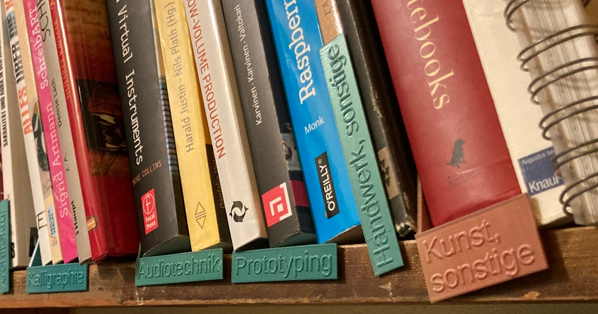

My liking for order and 3d printing made me build library-like shelf labeling. The OpenSCAD files can be found on Github.
Using the files works like:
- Pick a file, do you want the text to be horizontal or vertical and above or below the floor like?
- Write the text into the 'word_text' variable
- Adjust 'width' so that the text fits nicely onto the label
- Render, export and print
I didn't try it but it likely works with braille too.
Text last updated: October 5th, 2021